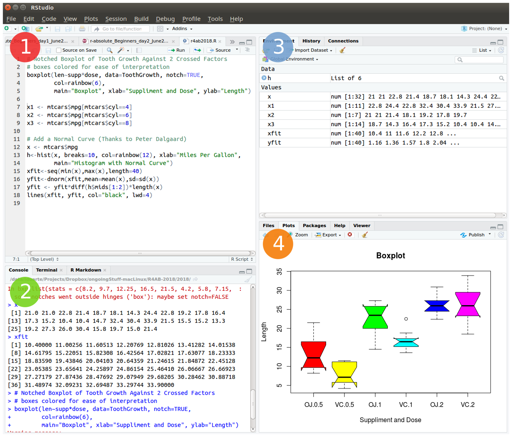
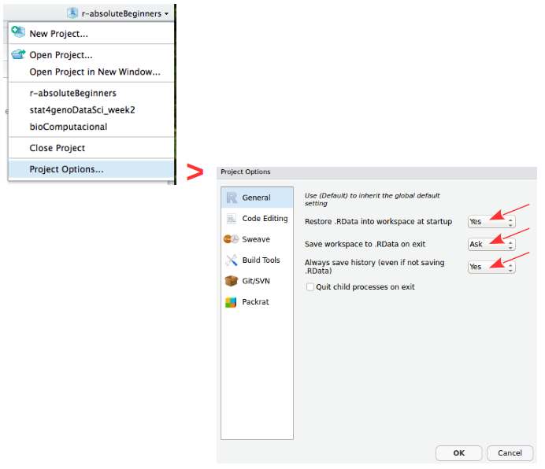
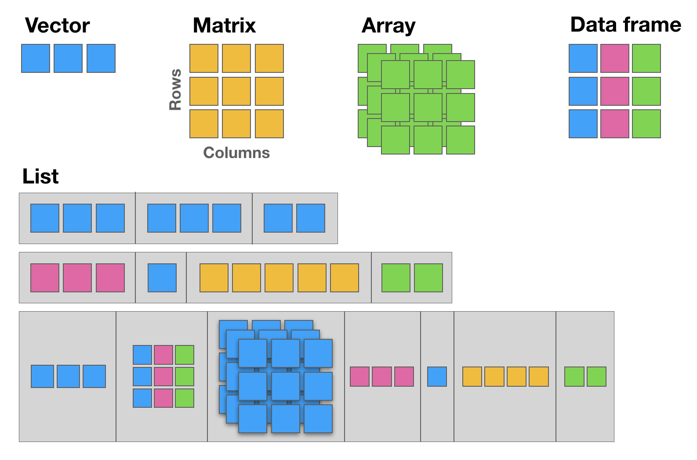
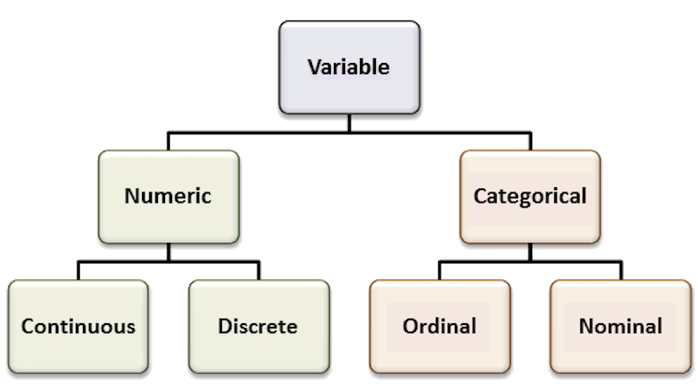

# This is a comment
# 3 + 4 # this code is not evaluated, so and it does not print any result
2 + 3 # the code before the hash sign is evaluated, so it prints the result (value 5)[1] 5This mini hands-on tutorial serves as an introduction to basic R, covering the following topics:
This protocol is divided into 7 parts, each one identified by a Title, Maximum execution time (in parenthesis), a brief Task description and the R commands to be executed. These will always be inside grey text boxes, with the font colored according to the R syntax highlighting.
Websites
Books
# This is a comment
# 3 + 4 # this code is not evaluated, so and it does not print any result
2 + 3 # the code before the hash sign is evaluated, so it prints the result (value 5)[1] 5my.variable_name.3+2 is the same as 3 + 2, and function (arg1 , arg2) is the same as function(arg1,arg2).; (semi-colon)More recent versions of RStudio auto-complete your commands by showing you possible alternatives as soon as you type 3 consecutive characters, however, if you want to see the options for less than 3 chars, just press tab to display available options. Tip: Use auto-complete as much as possible to avoid typing mistakes.
There are 4 main vector data types: Logical (TRUE or FALSE); Numeric (e.g. 1,2,3…); Character (e.g. “u”, “alg”, “arve”) and Complex (e.g. 3+2i)
Vectors are ordered sets of elements. In R vectors are 1-based, i.e. the first index position is number 1 (as opposed to other programming languages whose indexes start at zero).
R objects can be divided in two main groups: Functions and Data-related objects. Functions receive arguments inside circular brackets ( ) and objects receive arguments inside square brackets [ ]:
function (arguments)
data.object [arguments]
RStudio can be opened by double-clicking its icon.
The R environment is controlled by hidden files (files that start with a .) in the start-up directory: .RData, .Rhistory and .Rprofile (optional).
It is always good practice to rename these files:
To quit R, just close RStudio or use the q () function, and you will be asked if you want to save the workspace image (i.e. the .RData file):
Save workspace image to ~/path/to/your/working/directory/.RData? [y/n/c]:
By typing y (yes), then the entire R workspace will be written to the .RData file (which can be very large). Often it is sufficient to just save an analysis script (i.e. a reproducible protocol) in an R source file. This way, one can quickly regenerate all data sets and objects for future analysis. The .RData file is particularly useful to save the results from analyses that require a long time to compute, and to keep checkpoints of your analysis pipeline.
In R, the fundamental unit of shareable code is the package. A package bundles together code, data, documentation, and tests, and is easy to share with others. These packages are stored online from which they can be easily retrieved and installed on your computer (R packages by Hadley Wickham). There are 2 main R repositories:
This huge variety of packages is one of the reasons why R is so successful: the chances are that someone has already solved a problem that you’re working on, and you can benefit from their work by downloading their package for free.
In this tutorial you will not use any packages. However, if you continue to use R for biodata analysis you will surely need to install many useful packages, both from CRAN and from Bioconductor (R repositories), and from other code repositories such as GitHub.
There are several alternative ways to install packages in R. Depending on the repository from which you want to install a package, there are dedicated functions that facilitate this task:
install.packages() built-in function to install packages from the CRAN repository;BiocManager::install() to install packages from the Bioconductor repository;remotes::install_github to install packages from GitHub (a code repository, not exclusively dedicated to R).After installing a package, you must load it to make its contents (functions and/or data) available. The loading is done with the function library(). Alternatively, you can prepend the name of the package followed by :: to the function name to use it (e.g. ggplot2::qplot()).
First lets learn how to install packages from CRAN and from Bioconductor. To install packages from CRAN, R provides the install.packages() function, and any installed package, to be used, must be loaded via the library() function.
# install the package called ggplot2
install.packages ("ggplot2")
# load the library ggplot2
library ("ggplot2") To install packages from Bioconductor, you must first install Bioconductor:
if (!requireNamespace("BiocManager", quietly = TRUE))
install.packages("BiocManager")
BiocManager::install()Once installed, you can now download packages from Bioconductor using the BiocManager::install() function. The package AnnotationDbi is one of the most used in the context of genomics. Lets install it as an example of how to install packages from the Bioconductor repository:
# Install the package
BiocManager::install("AnnotationDbi")
# Load the package
library("AnnotationDbi")Now the functions provided by the ggplot2 and the AnnotationDbi packages are available to be used in R.
To install packages from GitHub, the easiest way is to install the remotes package first, and then install the package of interest.
# Make sure you have the {remotes} installed:
install.packages('remotes')
# Now you can install the ualg.compbio package from GitHub with:
remotes::install_github("instructr/ualg.compbio")Now you will have the tutorials provided by the ualg.compbio package.
But how to get information/help on how to use any function in R? There are many built-in ways in which R can provide help regarding its functions and packages:
# help(package="package_name") to get help about a specific package
help (package=ggplot2)
# show a pdf with the package manual (called R vignettes)
vignette ("ggplot2")
# ?function to get quick info about the function of interest
?qplot Your working environment is the place where the variables, functions, and data that you create are stored. More advanced users can create more than one environment.
ls() # list all objects in your environment
dir() # list all files in your working directory
getwd() # find out the path to your working directory
setwd("/home/foo/bar/DATA/") # example of setting a new working directory pathTo start we will open RStudio. This is an Integrated Development Environment - IDE - that includes syntax-highlighting text editor (1 in Figure1), an R console to execute code (2 in Figure1), as well as workspace and history management (3 in Figure1), and tools for plotting and exporting images, browsing the workspace, managing packages and viewing html/pdf files created within RStudio (4 in Figure1).

Projects are a great functionality, easing the transition between different dataset analyses, and allowing a fast navigation to your analysis/working directory. To create a new project:
File > New Project... > New Directory > New Project
Directory name: r-absoluteBeginners
Create project as a subdirectory of: ~/
Browse... (directory/folder to save the workshop data)
Create ProjectProjects should be personalized by clicking on the menu in the right upper corner. The general options - R General - are the most important to customize, since they allow the definition of the RStudio “behavior” when the project is opened. The following suggestions are particularly useful:
Restore .RData at startup - Yes (for analyses with +1GB of data, you should choose "No")
Save .RData on exit - Ask
Always save history - Yes
Important NOTE: Please create a new R Script file to save all the code you use for today’s tutorial and save it in your current working directory. Name it: r4ab_day1.R
Values are assigned to named variables with an <- (arrow) or an = (equal) sign. In most cases they are interchangeable, however it is good practice to use the arrow since it is explicit about the direction of the assignment. If the equal sign is used, the assignment occurs from left to right.
x <- 7 # assign the number 7 to a variable named x
x # R will print the value associated with variable x
y <- 9 # assign the number 9 to the variable y
z = 3 # assign the value 3 to the variable z
42 -> lue # assign the value 42 to the variable named lue
x -> xx # assign the value of x (which is the number 7) to the variable named xx
xx # print the value of xx
my_variable = 5 # assign the number 5 to the variable named my_variableAllow the direct comparison between values, and its result is always a TRUE or FALSE value:
| Symbol | Description |
|---|---|
== |
exactly the same (equal) |
!= |
different (not equal) |
< |
smaller than |
> |
greater than |
<= |
smaller or equal |
>= |
greater or equal |
1 == 1 # TRUE
1 != 1 # FALSE
x > 3 # TRUE (x is 7)
y <= 9 # TRUE (y is 9)
my_variable < z # FALSE (z is 3 and my_variable is 5)Compare logical (TRUE or FALSE) values:
| Symbol | Description |
|---|---|
& |
AND (vectorized) |
&& |
AND (non-vectorized/evaluates only the first value) |
| |
OR (vectorized) |
|| |
OR (non-vectorized/evaluates only the first value) |
! |
NOT |
QUESTION: Are these TRUE, or FALSE?
x < y & x > 10 # AND means that both expressions have to be true to return TRUE
x < y | x > 10 # OR means that only one expression must be true to return TRUE
!(x != y & my_variable <= y) # yet another AND example using NOTR makes calculations using the following arithmetic operators:
| Symbol | Description |
|---|---|
+ |
summation |
- |
subtraction |
* |
multiplication |
/ |
division |
^ |
power |
R has 5 basic data structures (see following figure).

The basic data structure in R is the vector, which requires all of its elements to be of the same type (e.g. all numeric; all character (text); all logical (TRUE or FALSE)).
| Function | Description |
|---|---|
c |
combine |
: |
integer sequence |
seq |
general sequence |
rep |
repetitive patterns |
x <- c (1,2,3,4,5,6)
x
class (x) # this function outputs the class of the object
y <- 10
class (y)
z <- "a string"
class (z)# The results are shown in the comments next to each line
seq (1,6) ## 1 2 3 4 5 6
seq (from=100, by=1, length=5) ## 100 101 102 103 104
1:6 ## 1 2 3 4 5 6
10:1 ## 10 9 8 7 6 5 4 3 2 1
rep (1:2, 3) ## 1 2 1 2 1 2Most arithmetic operations in the R language are vectorized, i.e. the operation is applied element-wise. When one operand is shorter than the other, the shortest one is recycled, i.e. the values from the shorter vector are re-used until the length of the longer vector is reached.
Please note that when one of the vectors is recycled, a warning is printed in the R Console. This warning is not an error, i.e. the operation has been completed despite the warning message.
1:3 + 10:12
# Notice the warning: this is recycling (the shorter vector "restarts" the "cycling")
1:5 + 10:12
x + y # Remember that x = c(1,2,3,4,5,6) and y = 10
c(70,80) + xSubsetting is one of the most powerful features of R. It is the extraction of one or more elements, which are of interest, from vectors, allowing for example the filtering of data, the re-ordering of tables, removal of unwanted data-points, etc. There are several ways of sub-setting data.
Note: Please remember that indices in R are 1-based (see introduction).
# Subsetting by indices
myVec <- 1:26 ; myVec
myVec [1] # prints the first value of myVec
myVec [6:9] # prints the 6th, 7th, 8th, and 9th values of myVec
# LETTERS is a built-in vector with the 26 letters of the alphabet
myLOL <- LETTERS # assign the 26 letters to the vector named myLOL
myLOL[c(3,3,13,1,18)] # print the requested positions of vector myLOL
#Subsetting by same length logical vectors
myLogical <- myVec > 10 ; myLogical
# returns only the values in positions corresponding to TRUE in the logical vector
myVec [myLogical]Referring to an index by name rather than by position can make code more readable and flexible. Use the function names to attribute names to each position of the vector.
joe <- c (24, 1.70)
names (joe) ## NULL
names (joe) <- c ("age","height")
names (joe) ## "age" "height"
joe ["age"] == joe [1] ## age TRUE
names (myVec) <- LETTERS
myVec
# Subsetting by field names
myVec [c("A", "A", "B", "C", "E", "H", "M")] ## The Fibonacci Series :o)Sometimes we want to retain most elements of a vector, except for one or a few unwanted positions. Instead of specifying all elements of interest, it is easier to specify the ones we want to remove. This is easily done using the minus sign.
alphabet <- LETTERS
alphabet # print vector alphabet
vowel.positions <- c(1,5,9,15,21)
alphabet[vowel.positions] # print alphabet in vowel.positions
consonants <- alphabet [-vowel.positions] # exclude all vowels from the alphabet
consonantsMatrices are two dimensional vectors (tables), where all columns are of the same length, and, just like one-dimensional vectors, matrices store same-type elements (e.g. all numeric; all character (text); all logical (TRUE or FALSE)). Matrices are explicitly created with the matrix function.
IMPORTANT NOTE: R uses a column-major order for the internal linear storage of array values, meaning that first all of column 1 is stored, then all of column 2, etc. This implies that, by default, when you create a matrix, R will populate the first column, then the second, then the third, and so on until all values given to the matrix function are used. This is the default behavior of the matrix function, which can be changed via the byrow parameter (default value is set to FALSE).
my.matrix <- matrix (1:12, nrow=3, byrow = FALSE) # byrow = FALSE is the default (see ?matrix)
dim (my.matrix) # check the dimension (size) of the matrix: number of rows (first number) and number of columns (second number)
my.matrix # print the matrix
xx <- matrix (1:12, nrow=3, byrow = TRUE)
dim (xx) # check if the dimensions of xx are the same as the dimensions of my.matrix
xx # compare my.matrix with xx and make sure you understand what is hapenningVery Important Note: The arguments inside the square brackets in matrices (and data.frames - see next section) are the [row_number, column_number]. If any of these is omitted, R assumes that all values are to be used: all rows, if the first value before the comma is missing; or all columns if the second value after the comma is missing.
# Creating a matrix of characters
my.matrix <- matrix (LETTERS, nrow = 4, byrow = TRUE)
# Please notice the warning message (related to the "recycling" of the LETTERS)
my.matrix # print the matrix
dim (my.matrix) # check the dimensions of the matrix
# Subsetting by indices
my.matrix [,2] # all rows, column 2 (returns a vector)
my.matrix [3,] # row 3, all columns (returns a vector)
my.matrix [1:3,c(4,2)] # rows 1, 2 and 3 from columns 4 and 2 (by this order) (returns a matrix)Data frames are the most flexible and commonly used R data structures, used to store datasets in spreadsheet-like tables.
In a data.frame, usually the observations are the rows and the variables are the columns. Unlike matrices, the columns of a data frame can be vectors of different types (i.e. text, number, logical, etc, can all be stored in the same data frame). However, each column must to be of the same data type.
df <- data.frame (type=rep(c("case","control"),c(2,3)),time=rnorm(5))
# rnorm is a random number generator retrieved from a normal distribution
class (df) ## "data.frame"
dfData frames are easily subset by index number using the square brackets notation [], or by column name using the dollar sign $.
Remember: The arguments inside the square brackets, just like in matrices, are the [row_number, column_number]. If any of these is omitted, R assumes that all values are to be used.
NOTE: R includes a package in its default base installation, named “The R Datasets Package”. This resource includes a diverse group of datasets, containing data from different fields: biology, physics, chemistry, economics, psychology, mathematics. These data are very useful to learn R. For more info about these datasets, run the following command: library(help=datasets)
Here we will use the classic iris dataset to explore data frames, and learn how to subset them.
# Familiarize yourself with the iris dataset (built-in dataset with measurements of iris flowers)
iris
# Subset by indices the iris dataset
iris [,3] # all rows, column 3
iris [1,] # row 1, all columns
iris [1:9, c(3,4,1,2)] # rows 1 to 9 with columns 3, 4, 1 and 2 (in this order)
# Subset by column name (for data.frames)
iris$Species #show only the species column
iris[,"Sepal.Length"]
# Select the time column from the df data frame created above
df$time ## 0.5229577 0.7732990 2.1108504 0.4792064 1.3923535Lists are very powerful data structures, consisting of ordered sets of elements, that can be arbitrary R objects (vectors, strings, functions, etc), and heterogeneous, i.e. each element of a different type.
lst = list (a=1:3, b="hello", fn=sqrt) # index 3 contains the function "square root"
lst
lst$fn(49) # outputs the square root of 49Like data frames they can be subset both by index number (inside square brackets) or by name using the dollar sign.
NOTE: There is one subsetting feature that is particular to lists, which is the possibility of indexing using single square brackets [ ], or double square-brackets [[ ]]. The difference between these are the fact that, single brackets always return a list, while double brackets return the object in its native type (the same occurs with the dollar sign). For example, if the 3rd element of my.list is a data frame, then indexing the list using my.list[3] will return a list, of size 1 storing a data frame; but indexing it using my.list[[3]] will return the data frame itself.
# Subsetting by indices
lst [1] # returns a list with the data contained in position 1 (preserves the type of data as list)
class (lst[1])
lst [[1]] # returns the data contained in position 1 (simplifies to inner data type)
class(lst[[1]])
# Subsetting by name
lst$b # returns the data contained in position 1 (simplifies to inner data type)
class(lst$b)
# Compare the class of these alternative indexing by name
lst["a"]
lst[["a"]]Factors are variables in R which take on a limited number of different values - such variables are often refered to as categorical variables.

“One of the most important uses of factors is in statistical modeling; since categorical variables enter into statistical models differently than continuous variables, storing data as factors insures that the modeling functions will treat such data correctly.
Factors in R are stored as a vector of integer values with a corresponding set of character values to use when the factor is displayed. The factor function is used to create a factor. The only required argument to factor is a vector of values which will be returned as a vector of factor values. Both numeric and character variables can be made into factors, but a factor’s levels will always be character values. You can see the possible levels for a factor through the levels command.
Factors represent a very efficient way to store character values, because each unique character value is stored only once, and the data itself is stored as a vector of integers. Because of this, read.table will automatically convert character variables to factors unless the stringsAsFactors = FALSE argument is specified.”
(Adapted from: https://www.stat.berkeley.edu/~s133/factors.html)
# Create a vector of numbers to be displayed as Roman Numerals
my.fdata <- c(1,2,2,3,1,2,3,3,1,2,3,3,1)
# look at the vector
my.fdata
# turn the data into factors
factor.data <- factor(my.fdata)
# look at the factors
factor.data
# add labels to the levels of the data
labeled.data <- factor(my.fdata,labels=c("I","II","III"))
# look at the factors
labeled.data
# look only at the levels (i.e. character labels) of the factors
levels(labeled.data)Data structures can be inter-converted (coerced) from one type to another. Sometimes it is useful to convert between data structure types (particularly when using packages).
NOTE: Such conversions are not always possible without information loss - for example converting a data frame with mix data types to a matrix is not possible without converting all columns to the same type, possibly leading to losses.
R has several functions for data structure conversions:
# To check the class of the object:
class(lst)
# To check the basic structure of an object:
str(lst)
# "Force" the object to be of a certain type:
# (this is not valid code, just a syntax example)
as.matrix (myDataFrame) # convert a data frame into a matrix
as.numeric (myChar) # convert text characters into numbers
as.data.frame (myMatrix) # convert a matrix into a data frame
as.character (myNumeric) # convert numbers into text charsfor () and while () loopsR allows the implementation of loops, i.e. replicating instructions in an iterative way (also called cycles). The most common ones are for () loops and while () loops. The syntax for these loops is: for (condition) { code-block } and while (condition) { code-block }.
# creating a for loop to calculate the first 12 values of the Fibonacci sequence
my.x <- c(1,1)
for (i in 1:10) {
my.x <- c(my.x, my.x[i] + my.x[i+1])
print(my.x)
}
# while loops will execute a block of commands until a condition is no longer satisfied
x <- 3 ; x
while (x < 9)
{
cat("Number", x, "is smaller than 9.\n") # cat is a printing function (see ?cat)
x <- x+1
}if () statementsConditionals allow running commands only when certain conditions are TRUE. The syntax is: if (condition) { code-block }.
x <- -5 ; x
if (x >= 0) { print("Non-negative number") } else { print("Negative number") }
# Note: The else clause is optional. If the command is run at the command-line,
# and there is an else clause, then either all the expressions must be enclosed
# in curly braces, or the else statement must be in line with the if clause.
# coupled with a for loop
x <- c(-5:5) ; x
for (i in 1:length(x)) {
if (x[i] > 0) {
print(x[i])
}
else {
print ("negative number")
}
} ifelse () statementsThe ifelse function combines element-wise operations (vectorized) and filtering with a condition that is evaluated. The major advantage of the ifelse over the standard if-then-else statement is that it is vectorized. The syntax is: ifelse (condition-to-test, value-for-true, value-for-false).
# re-code gender 1 as F (female) and 2 as M (male)
gender <- c(1,1,1,2,2,1,2,1,2,1,1,1,2,2,2,2,2)
ifelse(gender == 1, "F", "M")R allows defining new functions using the function command. The syntax (in pseudo-code) is the following:
my.function.name <- function (argument1, argument2, ...) {
expression1
expression2
...
return (value)
}Now, lets code our own function to calculate the average (or mean) of the values from a vector:
# Define the function
# Please note that the function must be declared in the script before it can be used
my.average <- function (x) {
average.result <- sum(x)/length(x)
return (average.result)
}
# Create the data vector
my.data <- c(10,20,30)
# Run the function using the vector as argument
my.average(my.data)
# Compare with R built-in mean function
mean(my.data)Most R users need to load their own datasets, usually saved as table files (e.g. Excel, or .csv files), to be able to analyse and manipulate them. After the analysis, the results need to be exported/saved (e.g. to view or use with other software).
# Inspect the esoph built-in dataset
esoph
dim(esoph)
colnames(esoph)
### Saving ###
# Save to a file named esophData.csv the esoph R dataset, separated by commas and
# without quotes (the file will be saved in the current working directory)
write.table (esoph, file="esophData.csv", sep="," , quote=F)
# Save to a file named esophData.tab the esoph dataset, separated by tabs and without
# quotes (the file will be saved in the current working directory)
write.table (esoph, file="esophData.tab", sep="\t" , quote=F)
### Loading ###
# Load a data file into R (the file should be in the working directory)
# read a table with columns separated by tabs
my.data.tab <- read.table ("esophData.tab", sep="\t", header=TRUE)
# read a table with columns separated by commas
my.data.csv <- read.csv ("esophData.csv", header=T)Note: if you want to load or save the files in directories different from the working directory, just use (inside quotes) the full path as the first argument, instead of just the file name (e.g. “/home/Desktop/r_Workshop/esophData.csv”).
iris buil-in dataset# the unique function returns a vector with unique entries only (remove duplicated elements)
unique (iris$Sepal.Length)
# length returns the size of the vector (i.e. the number of elements)
length (unique (iris$Sepal.Length))
# table counts the occurrences of entries (tally)
table (iris$Species)
# aggregate computes statistics of data aggregates (groups)
aggregate (iris[,1:4], by=list (iris$Species), FUN=mean, na.rm=T)
# the %in% function returns the intersection between two vectors
month.name [month.name %in% c("CCMar","May", "Fish", "July", "September","Cool")]
# merge joins data frames based on a common column (that functions as a "key")
df1 <- data.frame(x=1:5, y=LETTERS[1:5]) ; df1
df2 <- data.frame(x=c("Eu","Tu","Ele"), y=1:6) ; df2
merge (df1, df2, by.x=1, by.y=2, all = TRUE)
# cbind and rbind (takes a sequence of vector, matrix or data-frame arguments
# and combine them by columns or rows, respectively)
my.binding <- as.data.frame(cbind(1:7, LETTERS[1:7])) # the '1' (shorter vector) is recycled
my.binding
my.binding <- cbind(my.binding, 8:14)[, c(1, 3, 2)] # insert a new column and re-order them
my.binding
my.binding2 <- rbind(seq(1,21,by=2), c(1:11))
my.binding2
# reverse the vector
rev (LETTERS)
# sum and cumulative sum
sum (1:50); cumsum (1:50)
# product and cumulative product
prod (1:25); cumprod (1:25)
### Playing with some R built-in datasets (see library(help=datasets) )
iris # familiarize yourself with the iris data
# mean, standard deviation, variance and median
mean (iris[,2]); sd (iris[,2]); var (iris[,2]); median (iris[,2])
# minimum, maximum, range and summary statistics
min (iris[,1]); max (iris[,1]); range (iris[,1]); summary (iris)
# exponential, logarithm
exp (iris[1,1:4]); log (iris[1,1:4])
# sine, cosine and tangent (radians, not degrees)
sin (iris[1,1:4]); cos (iris[1,1:4]); tan (iris[1,1:4])
# sort, order and rank the vector
sort (iris[1,1:4]); order (iris[1,1:4]); rank (iris[1,1:4])
# useful to be used with if conditionals
any (iris[1,1:4] > 2) # ask R if there are any values higher that 2?
all (iris[1,1:4] > 2) # ask R if all values are higher than 2
# select data
which (iris[1,1:4] > 2)
which.max (iris[1,1:4])
# subset data by values/patterns from different columns
subset(iris, Petal.Length >= 3 & Sepal.Length >= 6.5, select=c(Petal.Length, Sepal.Length, Species))esoph buil-in datasetThe esoph (Smoking, Alcohol and (O)esophageal Cancer data) built-in dataset presents 2 types of variables: continuous numerical variables (the number of cases and the number of controls), and discrete categorical variables (the age group, the tobacco smoking group and the alcohol drinking group). Sometimes it is hard to “categorize” continuous variables, i.e. to group them in specific intervals of interest, and name these groups (also called levels).
Accordingly, imagine that we are interested in classifying the number of cancer cases according to their occurrence: frequent, intermediate and rare. This type of variable re-coding into factors is easily accomplished using the function cut(), which divides the range of x into intervals and codes the values in x according to which interval they fall.
# subset non-contiguous data from the esoph dataset
esoph
summary(esoph)
# cancers in patients consuming more than 30 g/day of tobacco
subset(esoph$ncases, esoph$tobgp == "30+")
# total nr of cancers in patients older than 75
sum(subset(esoph$ncases, esoph$agegp == "75+"))
# factorize the nr of cases in 3 levels, equally spaced,
# and add the new column named cat_ncases, to the dataset
esoph$cat_ncases <- cut (esoph$ncases,3,labels=c("rare","med","freq"))
summary(esoph)The end